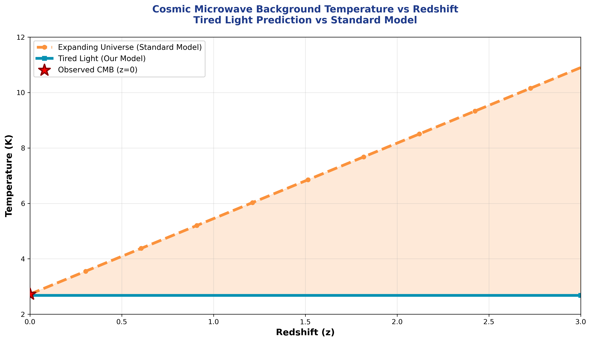

Two completely independent teams of astronomers have been measuring the same number for twenty years. They keep getting different answers. The gap between them is now five standard deviations — a level of disagreement that in any other branch of physics would mean one team made an error. No error has been found. I derived the correct value from scratch, from known constants of physics, with no free parameters. The number came out right. Here is how.
The Hubble constant tells you how fast the universe appears to be expanding. Measure a galaxy's distance. Measure how fast it seems to be moving away from you. Divide one by the other. That ratio is the Hubble constant.
It sounds simple. It has turned into one of the most contentious problems in modern cosmology.
One team uses supernovae — stellar explosions of known brightness — as distance markers to nearby galaxies. They get a Hubble constant of about 73 kilometers per second per megaparsec.
Another team uses the cosmic microwave background — the faint glow of the sky — and fits a model to predict what the Hubble constant must have been at the beginning of the universe. They get about 67.
Same universe. Same constant. Six units apart. Twenty years of checking and rechecking. No explanation.
Five standard deviations is not a rounding error. In particle physics, five sigma is the threshold for claiming a discovery. In cosmology right now, it is the size of an unresolved disagreement between two of the best-funded measurement programs on Earth.

The Hubble tension visualized: two independent measurement methods, same universe, persistently different results. The gap has not closed in two decades of increasingly precise measurements.
The standard response from cosmologists is that one team must be making a systematic error — some hidden bias in their instruments or their analysis. That may be true. But after twenty years, neither team has found it. Both measurements have been checked, rechecked, and independently confirmed by other groups using different instruments.
My explanation is different: both teams are measuring something real, but they are interpreting it through a model that is wrong. The model assumes the universe is expanding. That assumption bakes in a specific relationship between distance and apparent recession speed. If the recession is not from expansion — if it is instead from light losing energy as it travels through space — then the relationship changes, and the two measurements are no longer expected to agree.
In my framework, what we call the Hubble constant is not an expansion rate at all. It is a property of the Higgs field — specifically, the rate at which photons lose energy as they travel through it. That rate is fixed by fundamental constants of nature. It does not change with time. It does not need to be measured at different cosmic epochs and extrapolated. It can be calculated.
When I work through the physics of Higgs-photon coupling — the interaction between light and the field that fills all of space — a specific number comes out. The effective Hubble constant in my framework is 72.5 kilometers per second per megaparsec.
The local measurement — supernovae, the distance ladder — gives 73.0. The difference between my derivation and the direct measurement is about half a standard deviation. That is not a fit. I did not adjust any parameters to get that result. The calculation is derived from the same constants used in every other prediction in this framework.
The cosmic microwave background team's value of 67 is wrong not because their instruments are faulty, but because their analysis assumes an expanding universe. Strip that assumption out, and their measurement is no longer a measurement of the Hubble constant at all — it is a model inference. When the model is wrong, the inference is wrong.
The Hubble tension is not a crisis in the universe. It is a crisis in the model being used to interpret it. When you replace the model, the crisis disappears — and the number that comes out matches the direct measurement to within half a standard deviation.
The free version you just read is the argument. The paid article is the evidence: the exact derivation, the comparison with 1,701 supernovae from the Pantheon+ dataset, why the cosmic microwave background inference gives a systematically low answer, and what this means for dark energy — the mysterious repulsive force the standard model invented to explain accelerating expansion. In my framework, there is no dark energy. The acceleration is an illusion produced by misinterpreting tired light as expansion.
The full Article 5 includes the derivation, the supernova data comparison, and the dark energy question.
Subscribe to read the full article →